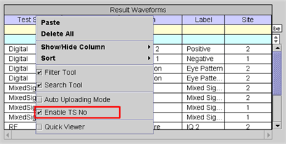

Enable TS No
This function enables/disables the test suite number from the Result Waveforms and Selected Graph tables in the Waveform Navigator Tool (WNT). The default is enabled. Without a waveform selected, right-click and check Enable TS No to enable the test suite number column as shown below or uncheck the box to disable the column.

- If Enable TS No is disabled, the Result Waveforms table will list the latest waveforms only.
- If you switch states (enable to disable or disable to enable), all the waveforms in the tables and all associated graphs in the Waveform Graphs Tool will be deleted.
- The current state of Enable TS No is saved automatically into your home directory. The WNT reads this state when starting the SmarTest software. Thus, if you do not want to use the test suite number as an identifier, disable Enable TS No once.